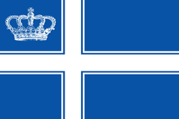
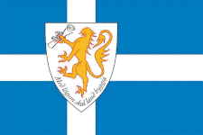

| Name |
Flag |
Location |
Established |
| Kingdom of Lovely |
|
United Kingdom |
2004–present |
| Free Republic of Liberland |
 |
Croatia |
2015–present |
| Aerican Empire |
|
Canada |
1987–present |
| Conch Republic |
|
United States |
1982–present |
| Grand Duchy of Westarctica |
 |
Antarctica |
2001–present |
| Principality of Sealand |
|
United Kingdom |
1967–present |
| New Utopia |
|
Caribbean Sea |
1999–present |
| Sovereign State of Forvik |
 |
United Kingdom |
2008–present |
| Austenasia |
|
United Kingdom |
2008–present |